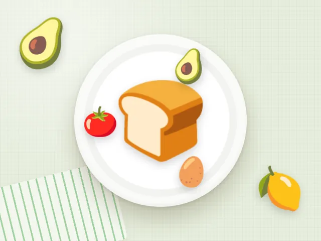

Тост с авокадо и яйцом
Ккал
314
Белки
15 г
Жиры
17 г
Углеводы
28 г
Состав на порцию
- Цельнозерновой хлеб — 50 г
- Авокадо — 60 г
- Яйца куриные (1 шт ≈ 55 г) — 55 г
- Помидоры — 50 г
- Сок лимона, соль, перец
Как приготовить
- Подсушите хлеб в тостере или на сухой сковороде.
- Разомните авокадо с лимонным соком и солью.
- Сварите яйцо пашот или всмятку.
- Выложите на тост авокадо, помидор и яйцо.
Калорийность и БЖУ посчитаны по составу на одну порцию. Хотите вписать тост с авокадо и яйцом в свой рацион? Посчитайте норму в калькуляторе калорий.